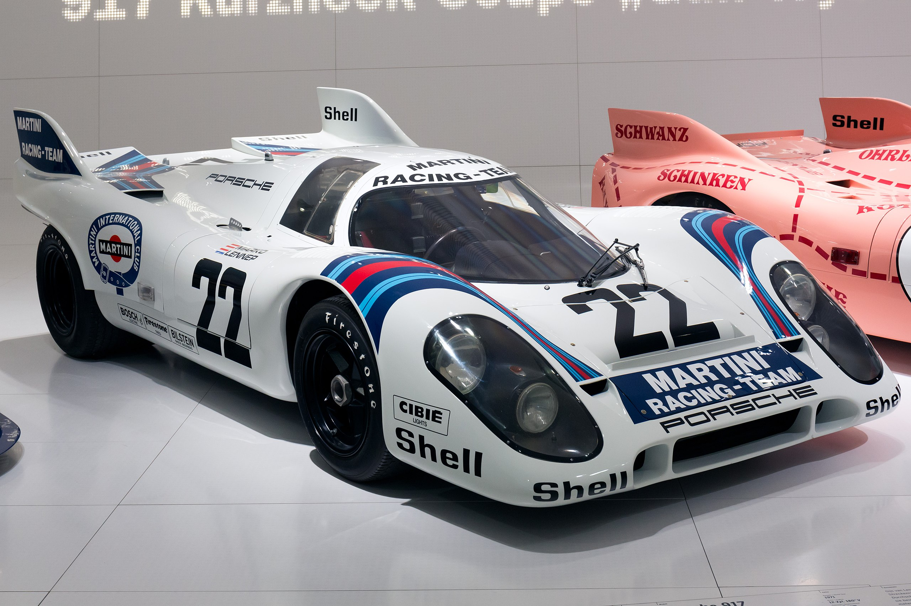
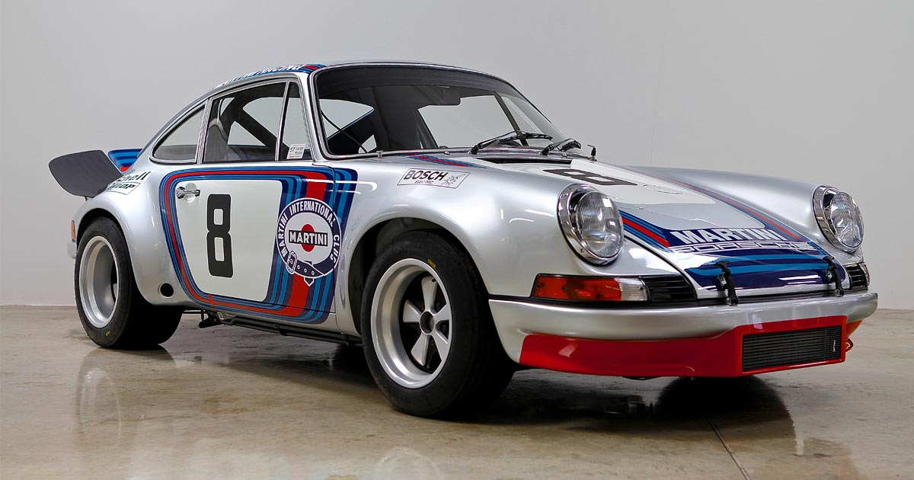
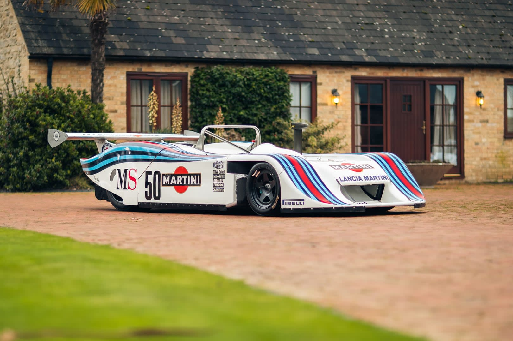
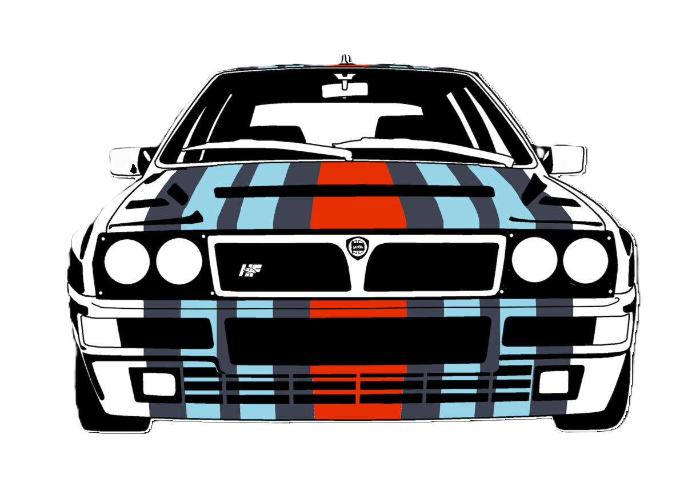
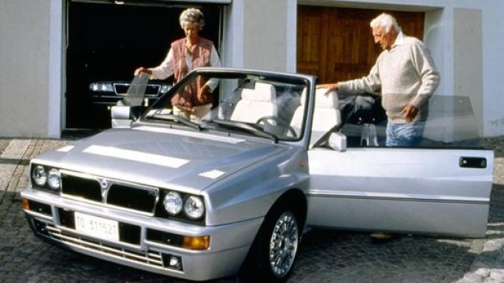
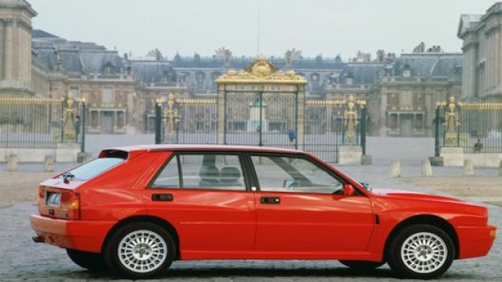
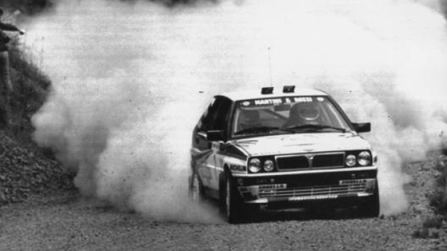

Martini Series
|  |
Porsche 917 – 1971
Porsche 917 “coda corta”, un mostro spinto da un 12 cilindri “boxer” di 4.907 cc, in grado
di erogare più di 600 cv. Più lenta della vettura gemella “a coda lunga” di Elford-Larrousse, che in prova tocca i
362 km/h sul rettifilo di Hunadiers, la Porsche numero 22, con struttura portante in megnesio, ha nella grande
affidabilità la sua arma vincente. |
| 
| Porsche 911 Carrera RSR - 1973
Per le gare Endurance si tratta di una novità assoluta, un azzardo tecnico,
che non convince molti addetti ai lavori. Anche costoro dovranno però ricredersi quando la granturismo tedesca, che
vanta un ottimo rapporto peso/potenza (310 cv, per 900 kg di peso) si aggiudica la Targa Florio del 1973. |
|  |
Lancia Gruppo 6 – 1982
A fine stagione il titolo iridato va alla Porsche, ma il favorevole rapporto
peso-potenza (450 cv per soli 650 kg di peso) consente alle vetture torinesi di battersi alla pari con le Porsche
956 e di concludere il Mondiale 1982 con tre prestigiose vittorie all’attivo: la 1000 km di Silverstone, la 6 ore
del Nürburgring e la 6 ore del Mugello. |
|
Lancia Delta HF Integrale

|
|  |
È il 1986 quando dallo stabilimento di Chivasso è uscita la prima Lancia a quattro ruote motrici, la Delta HF
4WD equipaggiata con un quattro cilindri in linea di 1.995 cc sovralimentato con over-boost, capace di erogare
165 Cv. |
|  |
La grinta della Lancia Delta HF integrale Evoluzione, “Evo” o “Deltona” per gli appassionati, rispetto al
modello precedente si evidenzia per il particolare logo HF in giallo con sovra impresso l'Elefantino rosso,
nonché per la carreggiata più larga e le bombature sui parafanghi, capaci di ospitare ruote più larghe, e pure
per il piccolo alettone posteriore nella parte alta del tetto. |
|  |
La Delta HF integrale Evoluzione ha mantenuto il quattro cilindri 2.0 litri 16V turbocompresso, che grazie ad
una modifica dell'impianto di scarico, ora con un unico terminale di sezione ovoidale più ampia, un silenziatore
profondamente rivisitato, e la nuova centralina elettronica Weber con una diversa mappatura, arriva a 210 Cv a
5.750 giri di potenza massima e 298 Nm a 3.500 giri di coppia. |
|